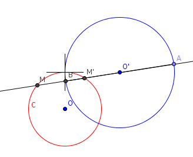
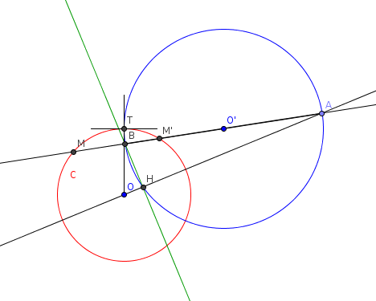

| Choisissez votre langue ! | Choose your language ! |
Il importe également de savoir que le birapport est conservé par projection centrale (voir ).
Il faut enfin connaître la , et savoir ce que sont des .
Nous commençons par décrire le régionnement du plan associé à toute conique.
Polaire d'un point par rapport à un cercle
It is also important to know that the cross ratio is preserved by central projection (see ).
Finally, you need to know the , and know what what are .
We start by describing the region of the plane associated with any conic section.
Polar of a point with respect to a circle

- A et B sont conjugués relativement à C.
- (A,B,M,M') est une division harmonique.
- A and B are conjugated relatively to C.
- (A,B,M,M') is a harmonic division.
\( \displaystyle \overrightarrow{OH} . \overrightarrow{OA} = R^{2} \)
\( \displaystyle \overrightarrow{OH} . \overrightarrow{OA} = R^{2} \)

Soit en effet H la projection orthogonale sur (OA) d'un point B alors le cercle de diamètre [AB] passe par H.
Alors B conjugué de A par rapport à C ⇔ \( \displaystyle \overrightarrow{OH} . \overrightarrow{OA} = R^{2} \) (revoir la )
Let H be the orthogonal projection on (OA) of a point B then the circle with diameter [AB] passes through H.
Then B conjugate of A with respect to C ⇔ \( \displaystyle \overrightarrow{OH} . \overrightarrow{OA} = R^{2} \) (review the )
Première application
Construction de la polaire d'un point extérieur à C.Avec l'applet suivante vous pouvez déplacer le point A extérieur à C.
Vous pouvez également faire varier le diamètre du cercle avec le curseur.
First application
Construction of the polar from a point outside C.With the following applet you can move the outer point A to C.
You can also vary the diameter of the circle with the slider.
Seconde application
Construction du pôle d'une sécante à C.L'applet suivante vous permet de voir la construction du pôle d'une droite sécante au cercle.
Vous pouvez déplacer M et M' sur C avec la souris ou le doigt et voir le pôle A de la droite (MM').
Le rayon du cercle peut être modifié avec un curseur.
Second application
Construction of the pole of a secant at C.The following applet allows you to see the construction of the pole of a line secant to the circle.
You can move M and M' on C with mouse or finger and see the A pole of the line (MM').
The radius of the circle can be changed with a slider.
Troisième application
Construction de la polaire d'un point à C.Si A est intérieur à C construire deux sécantes à C passant par A.
Construire les pôles G et H de ces deux sécantes.
La droite (GH) est la polaire de A.
L'applet suivante vous permet de déplacer A à l'intérieur du cercle et de voir sa polaire pA en vert.
Third application
Construction of the polar of a point to C.If A is interior to C construct two secants to C passing through A.
Construct the poles G and H of these two secants.
The line (GH) is the polar of A.
The following applet allows you to move A inside the circle and see its polar pA in green.
Quatrième application
Construction du pôle d'une droite non sécante au cercle.Il suffit de prendre deux points distincts A et B de la droite.
Puis de construire les polaires de A et B par la première méthode.
Le pôle cherché est l'intersection de ces deux polaires.
L'applet suivante vous permet de déplacer les points A et B pour faire varier la droite (AB), de telle sorte que (AB) ne soit pas sécante à C.
Le pôle de la droite (AB) est le point vert noté 'P'.
Vous pouvez également faire varier le rayon du cercle C.
Notez que la droite (OP), ici en vert, est un axe de symétrie pour la figure formée par le cercle C et la droite (AB).
Fourth application
Construction of the pole of a line not secant to the circle.Just take two distinct points A and B from the line.
Then construct the polars of A and B by the first method.
The sought pole is the intersection of these two polars.
The following applet allows you to move points A and B to vary the line (AB), such that (AB) is not secant to C.
The pole of the line (AB) is the green point noted 'P'.
You can also vary the radius of circle C.
Note that the line (OP), here in green, is an axis of symmetry for the figure formed by the circle C and the line (AB).
Polaire d'un point par rapport à une conique
Nous avons vu qu'une conique est la transformée d'un cercle par une projection centrale.Soit un point A' du plan de la conique qui soit l'image d'un point A du plan du cercle tel que A ne soit pas le centre du cercle.
Alors A a une polaire D relativement au cercle.
Polar of a point with respect to a conic section
We have seen that a conic is the transform of a circle by a central projection.Let a point A' of the plane of the conic be the image of a point A of the plane of the circle such that A is not the center of the circle.
Then A has a polar D relatively to the circle.
Si M1 et M2 sont les points d'intersection de Δ avec la conique.
Si M'1 et M'2 sont les points d'intersection de Δ' avec la conique.
Si B est le conjugué harmonique de A' par rapport à (M1,M2) et si B' est le conjugué harmonique de A' par rapport à (M'1,M'2).
La polaire de A' par rapport à la conique est la droite (BB').
En particulier :
If M1 and M2 are the intersection points of Δ with the conical.
If M'1 and M'2 are the intersection points of Δ' with the conical.
If B is the harmonic conjugate of A' with respect to (M1,M2) and if B' is the harmonic conjugate of A' with respect to (M'1,M'2).
The polar of A' with respect to the conic is the line (BB').
Especially :
La droite joignant les deux points de contact est la polaire du point par rapport à la conique.
The line joining the two contact points is the polar of the point with respect to the conic.
Equation de la polaire
Cas des coniques à centre
Considérons une conique à centre C d'équation\( \displaystyle \frac{x^{2}}{a^{2}} \pm \frac{y^{2}}{b^{2}} = 1 \)
Soit M1(x1,y1) un point extérieur à la conique.Soit P1 la droite d'équation
\( \displaystyle \frac{xx_{1}}{a^{2}} \pm \frac{yy_{1}}{b^{2}} = 1 \)
Alors, compte tenu de ce que nous avons vu sur , son équation est satisfaite par le point de contact de la première tangente à la conique C, et également par le second point de contact.Equation of the polar
Case of centered conics
Consider a conic with center C with equation\( \displaystyle \frac{x^{2}}{a^{2}} \pm \frac{y^{2}}{b^{2}} = 1 \)
Let M1(x1,y1) be a point outside the conic.Let P1 be the line with equation
\( \displaystyle \frac{xx_{1}}{a^{2}} \pm \frac{yy_{1}}{b^{2}} = 1 \)
So, given what we saw on , its equation is satisfied by the point of contact of the first tangent to the conic C, and also by the second point of contact.démonstration
En effet si M1(x1,y1) est intérieur à la conique les ordonnées des points d'intersection de la conique avec la verticale menée en M1 sont\( \displaystyle b\sqrt{1 - \frac{{x_{1}}^{2}}{a^{2}}} \)
et\( \displaystyle - b\sqrt{1 - \frac{{x_{1}}^{2}}{a^{2}}} \)
L'intersection de cette verticale avec la droite\( \displaystyle \frac{xx_{1}}{a^{2}} \pm \frac{yy_{1}}{b^{2}} = 1 \)
a pour ordonnée\( \displaystyle \frac{b^{2}}{y_{1}}\left( {1 - \frac{{x_{1}}^{2}}{a^{2}}} \right) \)
Posant\( \displaystyle \epsilon = \sqrt{\left( {1 - \frac{{x_{1}}^{2}}{a^{2}}} \right)} \)
Il suffit de montrer que\( \displaystyle \frac{y_{1} - {b\epsilon}}{y_{1} + {b\epsilon}} = \frac{\frac{b^{2}\epsilon^{2}}{y_{1}} - {b\epsilon}}{\frac{b^{2}\epsilon^{2}}{y_{1}} + {b\epsilon}} \)
ce qui se vérifie instantanément.proof
Indeed if M1(x1,y1) is inside the conic the ordinates of the points of intersection of the conic with the vertical led in M1 are\( \displaystyle b\sqrt{1 - \frac{{x_{1}}^{2}}{a^{2}}} \)
and\( \displaystyle - b\sqrt{1 - \frac{{x_{1}}^{2}}{a^{2}}} \)
The intersection of this vertical with the line\( \displaystyle \frac{xx_{1}}{a^{2}} \pm \frac{yy_{1}}{b^{2}} = 1 \)
has for ordinate\( \displaystyle \frac{b^{2}}{y_{1}}\left( {1 - \frac{{x_{1}}^{2}}{a^{2}}} \right) \)
Posing\( \displaystyle \epsilon = \sqrt{\left( {1 - \frac{{x_{1}}^{2}}{a^{2}}} \right)} \)
It suffices to show that\( \displaystyle \frac{y_{1} - {b\epsilon}}{y_{1} + {b\epsilon}} = \frac{\frac{b^{2}\epsilon^{2}}{y_{ 1}} - {b\epsilon}}{\frac{b^{2}\epsilon^{2}}{y_{1}} + {b\epsilon}} \)
which is verified instantly.Application à l'ellipse
L'applet suivante vous permet de déplacer le point M1 et de voir sa polaire par rapport à E.Les paramètres a et b de l'ellipse sont modifiables par curseurs.
L'équation de la polaire est calculée par la formule ci-dessus.
Application to the ellipse
The following applet allows you to move the point M1 and see its polar with respect to E.Parameters a and b of the ellipse can be modified by cursors.
The polar equation is calculated by the above formula.
Application à l'hyperbole
L'applet suivante vous permet de déplacer le point M1 et de voir sa polaire par rapport à H, tracée en rouge.Noter également, quand M1 est extérieur à H, la position des points de contact des tangentes (représentés en bleu) selon le quadrant dans lequel M1 se trouve.
On parle ici des quadrants délimités par les asymptotes (représentées en vert).
Observez ce qui se passe quand M1 est sur H.
Oservez ce qui se passe quand M1 est intérieur à H et se déplace sur l'axe x'Ox.
Application to the hyperbola
The following applet allows you to move the point M1 and see its polar with respect to H, plotted in red.Also note, when M1 is exterior to H, the position of the tangent contact points (shown in blue) according to the quadrant in which M1 lies.
We are talking here about the quadrants delimited by the asymptotes (represented in green).
Observe what happens when M1 is on H.
Observe what happens when M1 is inside H and moves on the x'Ox axis.
Cas des paraboles
On montre de la même façon que pour les coniques à centre que :Case of parabolas
We show in the same way as for the centered conics that:\( \displaystyle y = \frac{1}{2p}x^{2} \)
la polaire du point M1(x1,y1) a pour équation\( \displaystyle xx_{1} = p\left( {y + y_{1}} \right) \)
\( \displaystyle y = \frac{1}{2p}x^{2} \)
the polar of the point M1(x1,y1) has the equation\( \displaystyle xx_{1} = p\left( {y + y_{1}} \right) \)
Application
Nous utilisons le théorème ci-dessus pour calculer la polaire d'un point M1.Vous pouvez déplacer ce point avec l'applet ci-après.
Application
We use the above theorem to calculate the polar of a point M1.You can move this point with the applet below.
|
Création Gilles Dubois
Created by Gilles Dubois
|
Janvier 2022
January 2022
|
Version mobile Jquery
Mobile Jquery version
|
|